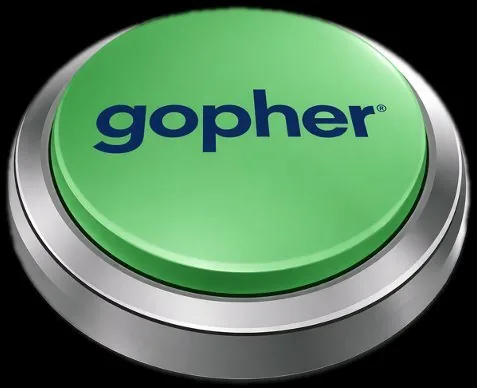
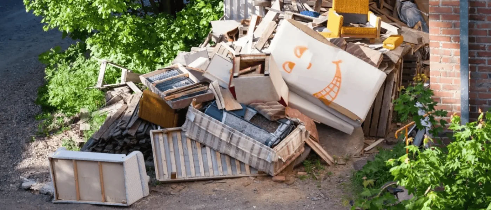
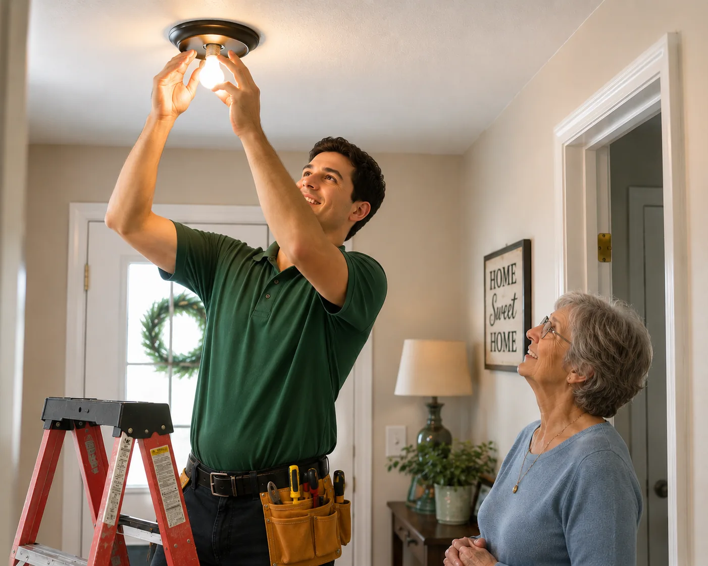

The Gopher Blog
Field notes from the neighborhood.
Real problems, straight answers, and the local way to get them handled — straight from the tunnel.
Real problems, straight answers, and the local way to get them handled — straight from the tunnel.
One app. Real local neighbors. Just about any task you can name — handled at a fair price you set. This is what a community marketplace was always supposed to be.
 Gopher Team·Jun 1, 2026·4 min read
Gopher Team·Jun 1, 2026·4 min readMost apps are built around a single job — one delivers food, one books a handyman, one hauls your junk. Gopher is built around something bigger: your community. It's the one place neighbors, workers, local businesses, and merchants all connect — so almost anything you need can be handled by someone right down the street.
And we do mean anything. Food and grocery delivery, junk removal, moving help, yard work, furniture assembly, TV mounting, house cleaning, courier runs, airport rides, pet sitting, prescription pickup, day labor, holiday decorating, smart-home setup — even the regulated stuff, with proper ID checks at the door. If it's a legal task a capable person can do, you can request it. No rigid categories, no "sorry, we don't do that."
What makes Gopher a true community marketplace is that everyone has a place in it — and each side makes the others stronger:
Every request is a paycheck for someone nearby. Every worker who joins makes the marketplace faster and stronger for the whole town. The money you spend keeps circulating right where you live.
It's local, and it's human — real, background-checked people, not anonymous gig accounts, with real ratings you can see. Find a Gopher you love? Save them as a MY Gopher and request that same trusted face by name next time. Because you set the price, it's fair on both ends: no surprise markups for you, full take-home for them. And most help shows up the same day, often within minutes.
We built Gopher to connect neighbors, businesses, merchants, and workers to fair-priced services — and to keep that value circulating right where you live. That's not just a marketplace. That's a community taking care of itself.
Whatever's on your list, a trusted local Gopher can handle it — at a price you set.

Showings and contracts are the easy part. It's the staging, the awkward furniture moves, and the "can you just handle this real quick?" jobs that eat your day — and don't fit any app's tidy little category.
Gopher Team·Apr 22, 2026·3 min readIf you've worked in real estate, you already know the job isn't really showings and contracts. It's the last-minute staging before a 9 a.m. shoot, the loveseat that has to move across town today, the lockbox key that needs to be three suburbs over in an hour, and the "can you just handle this real quick?" favor that lands on you with no warning.
Every one of those is small. Together, they're a second full-time job — and the apps you'd reach for weren't built for any of them.
Real estate tasks are hybrids. They're part move, part errand, part handyman, part judgment call — and they're almost always time-sensitive. So the category-shaped tools break down one by one:
Here's the shift: Gopher doesn't ask you to pick a category. You post what you need done — in plain words — name a price that's fair, and a vetted local Gopher takes it from there. One request can be a move and a haul-off and a staging reset. The neighbor who shows up handles the whole thing, sends you photos when it's done, and you never left the listing you were actually working on.
Found someone sharp? Save them as a favorite and request that same person for every listing, so your "staging guy" is one tap away. That's the part agents tell us changes everything: it stops being a scramble and starts being a routine. Gopher isn't one more vendor in your contacts — it's the single place the whole messy middle of the job gets handled.
Describe the job, name your price, and a trusted local Gopher is on the way. The in-between work, handled — start to finish.
Found us in a search but saw "no Gophers in your area"? Here's the five-minute fix: recruit a driver you already trust onto Gopher, and your next request goes straight to them.
Gopher Team·Apr 15, 2026·4 min readNot many Gophers near you yet? Let's change that. If you found us in a search but we couldn't connect you with a worker, we have the fix — and recruiting a local driver is quick and easy, especially if there are already delivery services running in your area.
So you searched for help, found Gopher, went to make your first request — and we weren't able to connect you with a driver. We know how that lands, and we want to be straight with you about why it happens and how you can fix it faster than we can.
Here's the honest version: people are finding Gopher all over the country — often in towns that don't have any age-restricted delivery options, and where, unfortunately, we don't have drivers signed up yet either.
It's a good problem and a frustrating one at the same time. The marketplace fills in as locals join, and a brand-new area can come to life incredibly fast — sometimes within a day of the first few sign-ups nearby. The best part? You don't have to wait around for that. You can light the match yourself.
The quickest way to get your personal errand runner secured is to tell someone about Gopher Go — our app for workers. On Gopher, they'll make right around double per delivery compared to other platforms, so they're almost always interested once they hear about it. So where do you find these people?
►
Watch: recruit your own Gopher
Play on YouTube ↗
We built Gopher to connect neighbors, businesses, merchants, and workers to fair-priced services — and there's no better way to get them all connected than a neighbor doing it themselves.
Know someone reliable — even a driver you already use elsewhere? Invite them to Gopher Go and make them your go-to.

Slammed one week, quiet the next? Gopher Connect gives your business a vetted, on-demand crew — couriers, movers, skilled pros, and extra hands — without the cost and commitment of permanent hires. Hit the Gopher “Too Easy” Button!
Gopher Team·Mar 30, 2026·3 min readDemand rarely shows up in neat, even amounts. One week you need three extra pairs of hands and a courier run across town; the next, you need nobody. Staffing for the busy days means paying through the slow ones — and staffing for the slow days means scrambling exactly when it counts.
Connect gives your business a vetted, on-demand local workforce. Post the work — a same-day courier, a two-person furniture move, a crew to flip a property between tenants, extra hands for a weekend event — set a fair price, and background-checked local Gophers claim it. No lead fees, no contracts, no payroll humming along through the slow weeks.
That's the kind of "right now" a real business runs on. Whether it's a one-off emergency or steady overflow help every busy season, you scale up on the heavy days and down to nothing on the quiet ones — paying only for the work you actually need.
Vetted local help for couriers, labor, and skilled work — scaled to the days you're slammed, gone on the days you're not.
Wine for the party, a carton of cigarettes, a bottle for a gift — getting it to the right person matters as much as getting it there fast. Here's how Gopher fixed the markups, the waiting, and the limits.
Gopher Team·Mar 18, 2026·4 min readNot every delivery is as simple as leaving a box on the porch. When it's alcohol, tobacco, a vape, or anything age-restricted, the delivery is only half the job — getting it into the right hands is the other half. That's exactly the part most services get wrong.
Either there's no real verification at all, or the few apps that do it bury you in markups, make you wait on a far-off warehouse, and limit you to a tiny menu of "partner" products. Gopher took every one of those problems apart.
Most third-party services pad the bill, because somebody in the partnership is recovering a fee. Gopher's model is different: your Gopher buys the item the same way you would — off the shelf, at the store, at retail. If there's a better deal nearby, you get that instead. You're paying for the run, not a hidden tax on every bottle.
Because Gopher doesn't lock you into one fulfillment center, you're not stuck hoping a distant warehouse stocks what you want. Choose "Gopher can purchase anywhere" and your driver grabs your order from the closest spot that actually has it — which is usually how it shows up in well under an hour.
No exclusive merchant deals means no tiny catalog. If a store sells it at retail, you can ask for it. The specific IPA, the exact brand, the thing the other app never carried — you request it, and a real person picks it up.
Post your job and flag it as age-restricted.
A background-checked Gopher accepts it.
Your government ID is verified at the door.
Only after verification is the order complete.
That last step protects everyone — the sender, the driver, and you — and makes sure sensitive items never reach the wrong hands. Want a driver you already trust with this kind of run? Use Select My Gopher to pick a Pro who's done it before. Safe, fairly priced, and genuinely fast: that's the whole point.
Tobacco, alcohol, and other adult items — at retail price, with ID verified at the door. Same-hour or scheduled, always your call.

The couch that won't fit the door. The dead fridge in the garage. The wall of moving boxes that multiplied overnight. Hauling it off shouldn't cost a fortune or a weekend.
Gopher Team·Feb 4, 2026·3 min readWe've all had the standoff: an old couch that won't fit back through the door, a dead refrigerator hogging the garage, or a pile of moving boxes that somehow doubled overnight. You know it has to go. Figuring out how is the part that stalls everyone.
Every option comes with a catch, and the catch is usually money or effort:
Gopher skips the whole production. Snap a photo of what needs to go, name a price that feels fair to you, and a neighbor with a truck and a strong back claims the job. They do the lifting, haul it off, and sweep up after — often the same day. You set the price instead of swallowing a flat fee, so a lone treadmill costs like a lone treadmill, not a minimum charge.
Want a hand sorting what's trash, what's donation, and what's actually worth selling? You can ask for that too — it's a person showing up, not a faceless pickup window. That's the difference: Gopher turns "I'll deal with it someday" into "it's gone by dinner," for a price you decided on.
One item or a full clean-out — post it, set your price, and a local with a truck takes it from here.

"Senior-friendly" shouldn't be a marketing line. It should mean the help is easy to ask for, shows up when it says it will, and treats you like a capable neighbor — every time.
Gopher Team·Jan 9, 2026·3 min readMore of our neighbors than ever are looking for a safe, dependable way to get everyday things done — a piece of furniture moved, a new TV set up, a grocery and pharmacy run handled. The need is simple. Finding help that's trustworthy, prompt, and respectful has been anything but.
It's not a sticker you slap on an app. To us it's four concrete promises:
There's no membership to sign, no schedule to keep, no commitment to wriggle out of later. You post what you need, set a price that feels fair, and a capable local person handles it. One task or once a week — entirely your call.
And here's the part families love: when you find a Gopher you click with, save them as a favorite and request that same friendly face every time. Help stops being a stranger at the door and becomes a familiar neighbor down the street — for you, or for a parent or grandparent you're keeping an eye on from afar. That's the marketplace we're building: not just hauling and delivery, but real help that treats people with dignity.
Vetted, rated, and respectful. Set up help for yourself — or for a parent or grandparent — in just a few taps.
Do all the work while someone else sets the price, takes a cut, and decides when you get paid? Gopher Go flips that. You set the rate, you pick the jobs, and the posted price is exactly what you take home.
Gopher Team·Dec 2, 2025·4 min readIf you've ever earned on a delivery or service app, you know the feeling: you do the work, and a company you'll never meet sets your price, skims a cut off the top, and decides when the money actually lands in your account. Gopher Go was built to put every one of those decisions back in your hands.
Whether you're a skilled pro — electrician, plumber, technician, welder — or a mover, hauler, errand runner, driver, or rideshare, here's why it's different.
Every job shows exactly what it pays, up front — no mystery math, no fees nibbling at the edges. If a listed price doesn't match your time and skill, send a counter-offer. For open requests, bid your own rate. You decide what's fair, and the customer's posted price is exactly what you take home. That's a 100% posted take rate — no cut, no catch.
You're never "on the clock." Grab one quick job between other commitments or fill a whole day with local work — no set schedules, no minimum hours, no penalty for logging off. The work fits your life, not the other way around.
Setup is the quickest in the business: build your profile and you're ready to earn. From there you climb a status ladder your neighbors can see — Standard → Elite → Elite+ — earned one solid job at a time. That reputation is yours, it's local, and it brings repeat customers who request you by name.
Fair pay you control, a schedule that's actually yours, and a name worth building right where you live. That's the whole idea.
Set your rate, pick your jobs, and build a reputation in your own neighborhood — from Standard to Elite to Elite+.
Third-party apps can eat a third of every ticket. Gopher does restaurant and food-truck delivery a different way — at no cost to you, with drivers who know their pay up front.
Gopher Team·Nov 12, 2025·3 min readFor a lot of mom-and-pop restaurants and nearly every food truck, "offering delivery" has meant handing a third party a big slice of every order — or skipping delivery altogether. Neither feels great when margins are already thin.
So let's be upfront: Gopher isn't trying to be the next DoorDash, Grubhub, or Uber Eats. Those platforms are built to push huge volumes of online orders. Gopher is here for everyone else — the local favorite that just wants its food to reach a few more doorsteps without surrendering a cut of every sale.
Gopher charges restaurants nothing. The delivery cost is agreed directly between the customer placing the request and the Gopher who delivers it. Your food goes out the door; your margin stays intact. Food trucks with no fixed address work the same way — the Gopher picks up wherever you're parked today.
There's no "tip baiting" on the Gopher Marketplace — delivery earnings are transparent and known up front, and paid immediately on completion. Drivers who feel respected show up on time, handle your food with care, and represent your kitchen well at the door. That's the part the big apps miss.
It's a delivery experience built so small kitchens aren't punished for being small.
Reach more local doorsteps with delivery that costs your restaurant nothing — and pays drivers fairly.
Referring an app usually pads the company's numbers, not your pocket. Gopher's Refer Yourself feature flips that — share your link and new requests come straight to you.
Gopher Team·Oct 28, 2025·2 min readWe know it's a grind out there. And let's be honest — when most apps ask you to "refer a friend," you do the work of spreading the word and the company gets a shiny new user. What do you get out of it? Usually not much. Gopher built the Refer Yourself feature to fix exactly that.
When you share your QR code or your personal "Refer yourself" link with your own contacts, anyone who signs up through it gets the option to add you as one of their MY Gophers. The moment they make their first request, it can come straight to you instead of the open queue.
Every person you refer yourself to instantly receives an inbox message to add you as a favorite. You're never obligated to accept a request that lands — it's simply another channel of work that's yours. Friends, neighbors, past customers, the folks who already trust you: each one becomes a potential repeat request with your name on it.
It's one of the simplest ways to build a book of regulars on Gopher — your reputation, your contacts, your earnings.
Share your link, get added as a favorite, and let first requests come straight to you — building repeat business that's yours.
Want a side hustle on your own time and your own terms — that isn't just dropping off food? Gopher lets you fill your day with the work you're good at, and get paid fast.
Gopher Team·Sep 16, 2025·3 min readLooking for a flexible gig you can do on your own time and your own terms? Becoming a Gopher might be the most refreshing earning platform you've tried — because here, you're not boxed into one kind of job.
Most apps put you in a single lane: food, or groceries, and that's it. Gopher users request almost anything, so you can fill your day with whatever variety you want — personal shopping, food delivery, handyman work, furniture assembly, dog walking, landscaping, ride-sharing, and plenty more. You're not "a delivery driver." You're building a career in your own style.
Do what you're good at, when you want, for pay you agreed to up front. That's a gig worth digging.
Variety beyond delivery, hours you choose, and pay you set — with money in your account fast.
No stories in this category yet — check back soon.